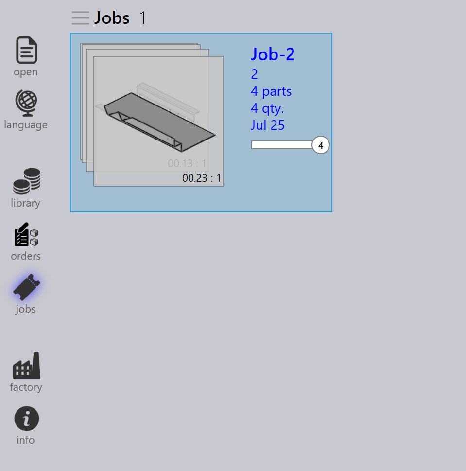

Auftrag erstellen
Aufträge werden verwendet, um Kundenbestellungen zu erfassen und zu verfolgen. Ein Auftrag enthält in der Regel eine Sammlung von Teilen mit unterschiedlichen Mengen, Fälligkeitsterminen, Prioritäten und Teilereihenfolgen.
Neue Aufträge können auf folgende Weise erstellt werden:
-
Aus vorhandenen Teilen in der Teilebibliothek.
-
Durch Ziehen von Teilen direkt auf die Auftragsseite und manuelle Eingabe der Auftragsparameter.
-
Aus Baugruppen.
-
Wählen Sie einige Teile aus der Bibliothek aus und klicken Sie mit der rechten Maustaste, um das Teile-Panel zu öffnen.
-
Klicken Sie auf Neu… → Job. Dadurch wird das Fenster neuer Job geöffnet.

-
Im Fenster „Neuer Auftrag":

-
Geben Sie die erforderlichen Auftragsfelder ein: Job Reference, Kunde und Kommentare.
-
Klicken Sie auf Mehr…, um auf zusätzliche Felder wie Kunde, Drehung und Text Markierung zuzugreifen, falls erforderlich.
-
Aktivieren Sie Alle antippen (F5)], um alle ausgewählten Teile beim Bearbeiten eines beliebigen Teils zu aktualisieren. Verwenden Sie dies, um Teilemenge, Fälligkeitsdatum, Priorität usw. zu ändern.
-
Klicken Sie auf OK, nachdem Sie alle Auftragsdetails eingegeben haben.
-
-
Wenn Zu den Jobs wechseln (F6) aktiviert ist, wechselt das System zur Auftragsseite und der Auftrag wird automatisch erstellt.

-
Sie können einen Auftrag auch mit einer der folgenden Methoden importieren:
-
Import aus einer Textdatei.
-
Import aus Tabellenkalkulationen (CSV- oder XLSX-Format).
-
Verwendung eines Überwachungsordners.
-
Weitere Informationen finden Sie im folgenden Kapitel.